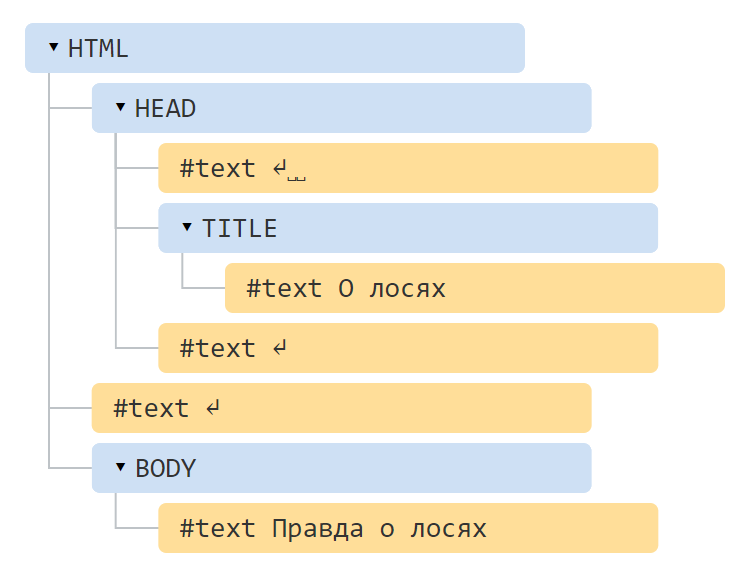

Основным инструментом работы и динамических изменений на странице является DOM (Document Object Model) – объектная модель, используемая для XML/HTML-документов.
Согласно DOM-модели, документ является иерархией, деревом. Каждый HTML-тег образует узел дерева с типом «элемент». Вложенные в него теги становятся дочерними узлами. Для представления текста создаются узлы с типом «текст».
DOM – это представление документа в виде дерева объектов, доступное для изменения через JavaScript.
Построим, для начала, дерево DOM для следующего документа.
<!DOCTYPE HTML>
<html>
<head>
<title>О лосях</title>
</head>
<body>
Правда о лосях
</body>
</html>Его вид:
В этом дереве выделено два типа узлов.
DOM нужен для того, чтобы манипулировать страницей – читать информацию из HTML, создавать и изменять элементы.
Таблицы всегда содержат <tbody>
При генерации DOM браузер самостоятельно обрабатывает ошибки в документе, закрывает теги и так далее.